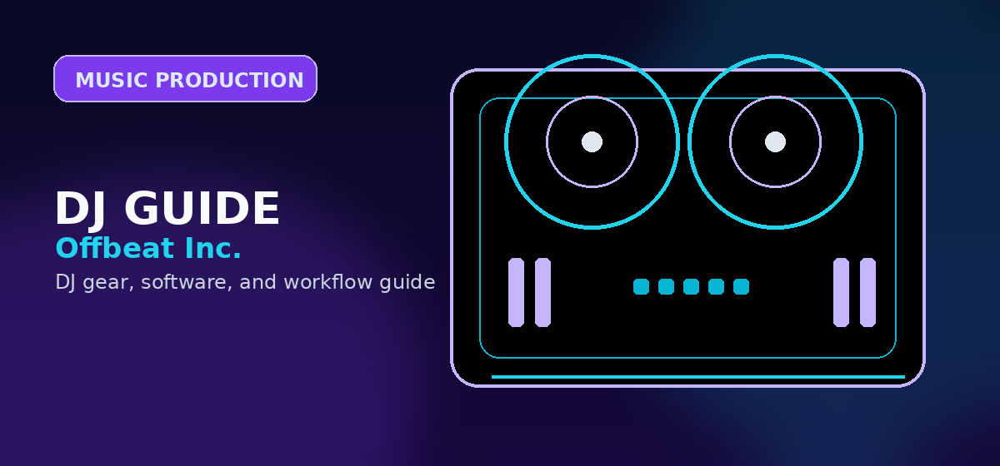

Best DJ Sample Packs 2026: Splice vs. Loopmasters vs. Beatstars – Which is Worth Your Money?
Comprehensive guide to DJ sample packs best splice loopmasters beatstars 2026 with practical recommendations and current buying notes — updated 2026.

Disclosure: This page uses affiliate links. We may earn a commission at no extra cost to you. Full disclosure →
In 2026, the line between DJing and production has completely blurred. To stay competitive in the booth, today's DJs need more than just a great tracklist; they need a custom sonic arsenal for live mashups, remixes, and original edits. The market is flooded with options, but three titans dominate the landscape: Splice, Loopmasters, and Beatstars. While Splice offers an AI-driven subscription ecosystem, Loopmasters remains the gold standard for curated, high-fidelity loops, and Beatstars provides direct access to the trend-setting sounds of the underground producer scene. Choosing the wrong platform can lead to "subscription fatigue" or a library full of generic sounds that don't fit your brand. This guide breaks down the costs, pros, and cons of each to help you build a professional-grade sample library that actually enhances your performance.
Splice: The AI-Powered Industry Standard
Splice has evolved into more than just a sample library; it is a complete AI-integrated workflow. Its "credit" system allows you to cherry-pick individual sounds rather than buying entire packs, which is ideal for DJs who only need a specific kick or a unique vocal chop. In 2026, their AI-powered search can analyze your existing project and suggest complementary samples in real-time. With plans starting around $12.99/month, it is the most accessible entry point for beginners. However, the "rental" feel of a subscription can be frustrating for those who prefer permanent ownership. Despite this, the sheer volume of content and the seamless DAW integration make it an essential tool for any modern electronic music producer.
Loopmasters: High-Fidelity Curated Excellence
For the DJ who prioritizes audio quality and genre purity, Loopmasters is the premier choice. Unlike the "buffet" style of Splice, Loopmasters focuses on highly curated packs created by world-class studio engineers. Whether you are looking for authentic 909 percussion or cutting-edge Melodic Techno loops, the fidelity here is unmatched. Prices vary from $19.99 for a mini-pack to $59.99 for comprehensive libraries. The primary advantage is ownership; once you buy a pack, it is yours forever. The downside is the higher upfront cost and a slower browsing experience. It is the "boutique" option for professionals who want sounds that are mixed and mastered to industry standards right out of the box.
Beatstars: The Pulse of Modern Urban Sound
Beatstars isn't just a marketplace for beats; it has become a powerhouse for sample packs and drum kits tailored for Hip-Hop, Trap, and R&B. If you want the "industry sauce" used by top chart-topping producers, this is where you find it. The platform thrives on a direct-to-creator model, allowing you to buy kits from the actual producers shaping the current sound. Prices are volatile, ranging from $20 for a basic drum kit to $150+ for exclusive sound banks. While the quality can be inconsistent compared to Loopmasters, the "trendiness" of the sounds is unrivaled. The complex licensing agreements can be a hurdle, but for DJs focusing on urban genres, it is an indispensable resource.
Strategy: Building Your 2026 Sample Arsenal
The most successful DJs in 2026 don't stick to one platform; they use a hybrid strategy. Use Splice for your "daily drivers"—those quick textures, FX, and one-shots that fill out a track. Allocate a monthly budget for a Splice subscription to keep your sound palette fresh. For your foundational sounds—the core kicks and snares that define your signature style—invest in a few high-end Loopmasters packs to ensure maximum punch in a club system. Finally, hit Beatstars once a quarter to grab a few specialized kits from rising producers to keep your edits sounding current. This balanced approach prevents overspending while ensuring your library is both deep (Loopmasters) and wide (Splice/Beatstars).
Comparison Overview
| Platform | Best For | Pricing Model | Key Advantage | Main Drawback |
|---|---|---|---|---|
| Splice | Variety & Speed | Subscription (~$12.99/mo) | AI-powered discovery | Credit-based limits |
| Loopmasters | Studio Quality | Pay-per-pack ($20-$60) | Professional curation | High upfront cost |
| Beatstars | Urban/Trend Sounds | Variable ($20-$150) | Direct producer access | Quality inconsistency |
Quick Verdict
- Best for Beginners: Splice. The low monthly cost and intuitive AI search make it the easiest way to start.
- Best for Club Professionals: Loopmasters. When the bass hits a 20k-watt system, the high-fidelity engineering of Loopmasters wins.
- Best for Hip-Hop/Trap DJs: Beatstars. No one captures the current urban aesthetic better than the producers on this platform.
Investing in the right samples is the fastest way to upgrade your live sets from "standard" to "signature." Whether you prefer the flexibility of a subscription or the security of ownership, these three platforms offer the best tools available in 2026. Ready to level up your sound? Check out our recommended links below to grab your first pack or start a free trial and begin transforming your tracks today.
Bottom line: Splice is the best value sample platform in 2026 -- pay-as-you-go credits, a 100M+ sample library, and DAW plugin integration. For deep House and Techno, Loopmasters outpunches Splice on specialist genre quality. Browse sample drives on Amazon →
Shop on Amazon
Take your samples further — samplers, drum machines, and more on Amazon.
Buyer Checklist Before You Purchase
Before completing your purchase, run through this checklist to confirm you have considered all the relevant factors:
- Check current pricing on Amazon, Sweetwater, and the manufacturer's own site — prices vary and retailer sales can save 10-20%
- Verify compatibility with your existing software and operating system (especially important for audio interfaces and DJ controllers)
- Read the most recent Reddit r/DJs posts for the specific model to catch any reliability or firmware issues not in formal reviews
- Confirm warranty terms — Sweetwater provides a 2-year warranty on most gear at no extra cost, often worth the slight price premium
- Look for bundle deals — some retailers include cables, software licenses, or accessories that add significant value
The products recommended above have been selected based on editorial research and user feedback across multiple communities. Always read the most recent user reviews before purchasing, as product quality and support can change with manufacturing revisions.
Alternatives Worth Considering
The products on this list represent the strongest options in each category, but the market changes regularly. If none of these quite fit your needs, consider exploring:
- One tier up or down from your budget — sometimes a $50 difference puts you in a significantly better product tier
- Open-box and used options — DJ gear depreciates quickly; factory-certified refurbished units from authorised dealers offer significant savings
- Last year's model — manufacturers typically update their entry-level line annually; the previous generation is often available at a deep discount with near-identical performance
Pro Tips Before You Decide
- Use free trials fully — spend the entire trial period on the specific workflow you plan to use long-term, not just exploring features
- Check recent reviews — software and gear receive regular updates; look for reviews or Reddit posts from the last 3-6 months
- Budget for accessories — cables, stands, carrying cases and replacement pads/needles add 10-20% on top of the main purchase price
- Join the community early — getting active in subreddits and Discord servers before purchasing gives you direct access to current owner feedback
- Plan your setup holistically — whichever product you choose, make sure it integrates cleanly with the rest of your gear and software ecosystem
Frequently Asked Questions
Where can I get free DJ sample packs?
Free packs are available from Splice (free tier), Looperman, Freesound, and Landr. Paid packs from Splice, Loopmasters, and Native Instruments tend to have better quality.
What sample pack formats work with Serato?
Serato works with any uncompressed audio format. WAV and AIFF are the best formats for quality. Many sample packs come in both WAV and MP3.
Are Splice samples royalty-free?
Yes. Splice samples are royalty-free for commercial use in your music. The license is included with your Splice subscription. Live-sampling Splice content without modification may require additional clearance.
How much do professional sample packs cost?
Subscription services like Splice (~$7.99/month) give you 100+ credits per month. Individual packs on Loopmasters range from $10–$40. Native Instruments' Expansion packs are ~$49 each.
What are the best sample packs for house music?
Top picks: Splice Originals House collections, Loopmasters Soulful House, and any pack from producers like MK, Larry Heard, or Frankie Knuckles tribute collections.